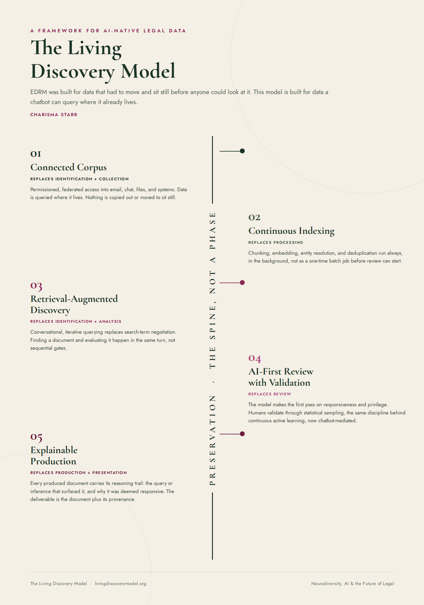

Five moving stages, built on one constant foundation. Each replaces a piece of EDRM's nine-phase structure, not by adding AI inside the old boxes, but by removing the constraint that made those boxes necessary in the first place.

Instead of collecting data into a repository, the system is given permissioned, federated access to where it already lives, email, chat, file shares, CRM, ticketing systems. Nothing is copied out. Nothing sits somewhere new waiting to be searched. Identification and collection used to be two separate events precisely because you had to find data before you could move it. When nothing moves, both collapse into one act of connecting.
Chunking, embedding, entity resolution, and deduplication run continuously in the background rather than as a single batch job that has to finish before review can start. Processing used to be a gate. Now it is a standing condition of the corpus, always current.
Search-term negotiation gives way to conversational, iterative querying. Finding a document and evaluating whether it matters happen in the same turn, not as sequential gates separated by weeks of linear review. This is where the old model's biggest assumption breaks down: that you must finish finding before you start understanding.
Law firms and eDiscovery providers keep their role as experts, guiding and consulting, without clients exporting data and handing it over. Company data stays inside company-governed systems, which reduces the third-party architecture analysis, security review, and risk that came with moving it in the first place.
The system makes the first pass on responsiveness and privilege. Humans validate through statistical sampling, the same discipline that already underlies continuous active learning and TAR 2.0, just chatbot-mediated instead of relevance-model-mediated. The skill shifts from reading every document to auditing a process.
Every document produced carries a reasoning trail, the query or inference that surfaced it, and why it was deemed responsive. Production and presentation used to be separate because you prepared a static export first and explained it to the courtroom later. When eDiscovery lives inside the client's own connected environment, those steps align instead: exhibits, Bates-stamped versions, and presentations are produced and revealed as needed, online or through export, rather than assembled after the fact.
Case strategy and privileged work product can live in that same corporate environment, properly labeled as privileged and walled off from indexing entirely. Storage and retrieval are separate questions, sitting in company infrastructure doesn't mean sitting in the corpus that the AI queries. The result is a cleaner chain of custody than the old export-and-explain model allowed: client data and attorney-client work product never leave the corporate environment.
This is the piece that has to be rebuilt from scratch, not relabeled. In the old model, preservation was accomplished by the act of collection itself: once you copied the data out and locked it down, it was safe from deletion or alteration because it no longer lived inside the systems that could change it.
In this model, the data never leaves. It stays in place, inside the corporation's own governed systems, the same systems where it originated and where people still use it every day. That is a real advantage: no separate copy to maintain, no question about whether an export still matches its source, no third-party repository that becomes its own point of failure.
But it means preservation has to do different work, in two parts. First, the live system itself needs enforceable hold controls: deletion paused, versions locked, the same protection collection used to provide, now applied directly to production data instead of a static copy. Second, because a chatbot queries that live data conversationally rather than through a one-time export, there has to be an immutable, auditable log of exactly what the system accessed, when, and what it did with it. That log is the new defensibility anchor. It is not something that happens once. It is the thing that makes everything else defensible.
The hard, unsolved problem is defensibility. Courts will ask how you know you found everything, and what you didn't find and why. Today's recall and precision statistics were built for a search that runs once against a static index. They do not map cleanly onto a conversational, iterative, non-deterministic retrieval process.